Stable Compendium record
trio-gallery
Kail / Marcel / Dao hero archive
Three protagonists under impossible pressure.
The supplied battle set emphasizes kinetic peril, gigantic threats and team choreography. Shared art is archived once here rather than duplicating binary data across three dossier folios.
- Stable ID
trio-gallery- Structural type
- section
- Canon status
- unknown
- Spoiler level
- major
Published source content
Visual locks carried by this set
- Kail: bright blue hair, black suit, red scarf fully covering the mouth; exactly one katana when a blade is present.
- Marcel: olive skin, widow’s peak, rustic green layers, plain wooden staff; any visible energy is blue barcode-stream Starsilk rather than generic aura.
- Dao: tan young man, short silver hair, eyepatch over the left eye, yellow jacket and cybernetic right-arm buster cannon.
- The trio should remain readable and active against threats that can be city-scale, celestial or structurally overwhelming.
- Landscape/keyframe staging favors clear lines of action, scarf motion, recoil, debris and blue Starsilk arcs that carry movement through the frame.
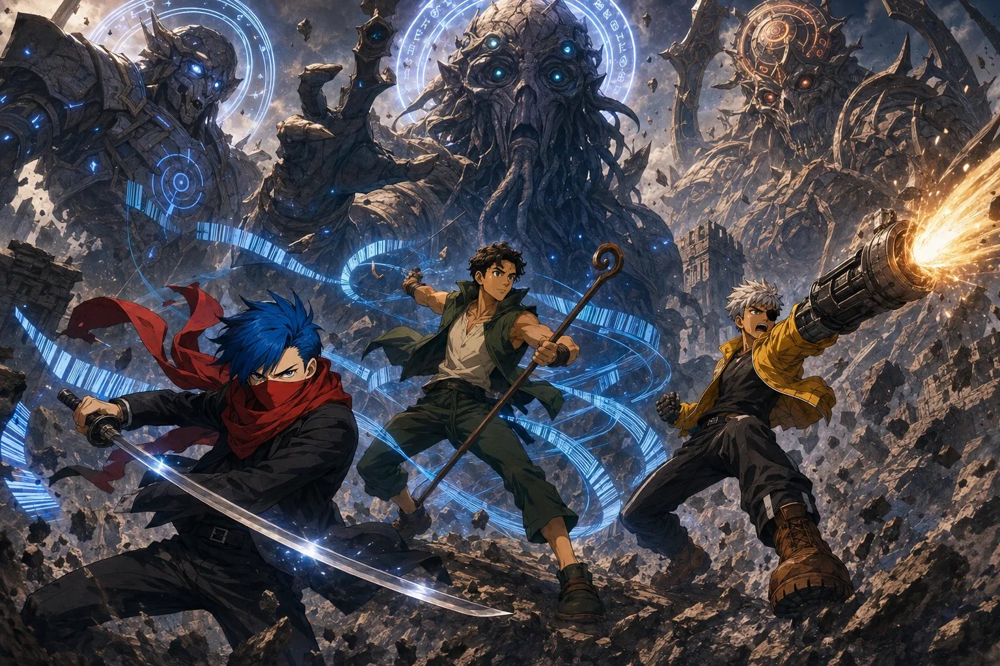
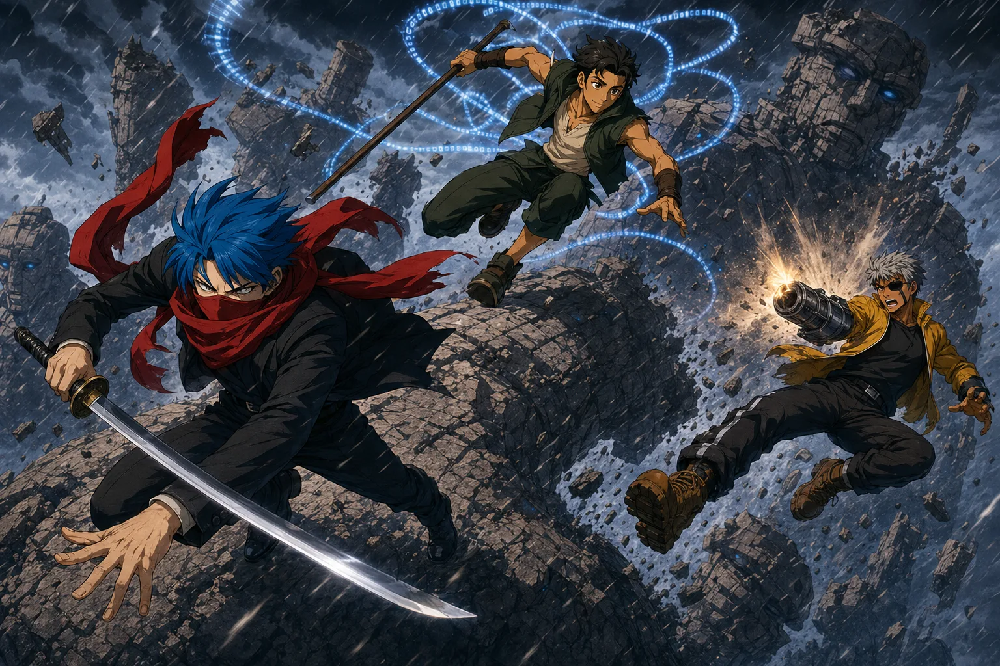
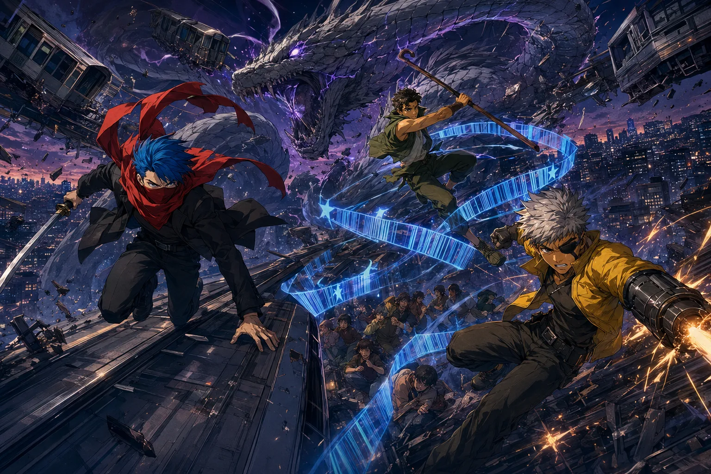
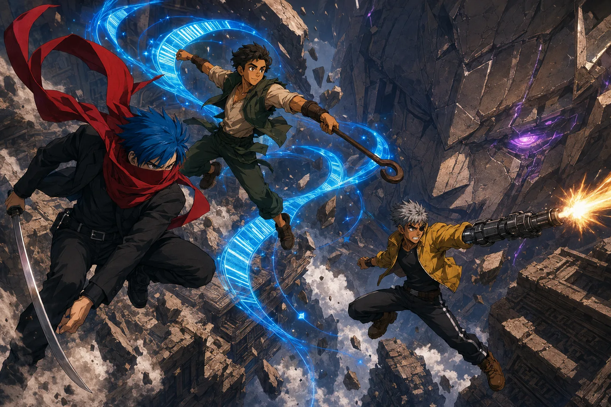
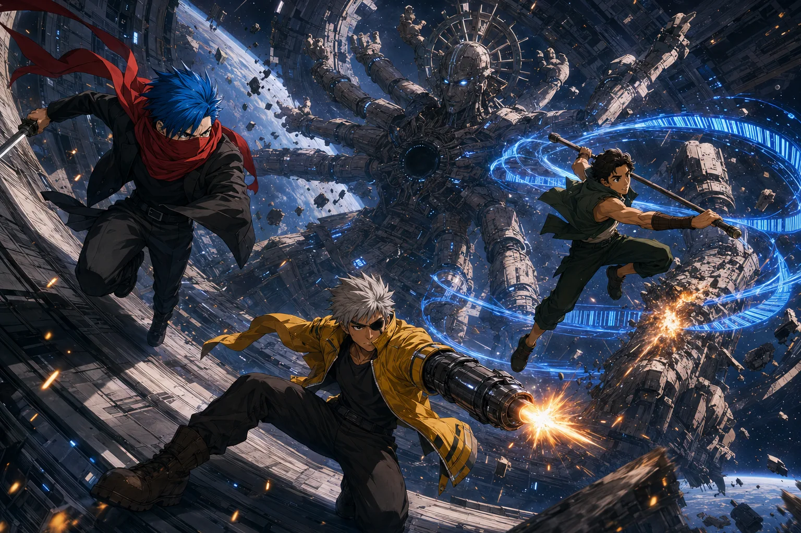
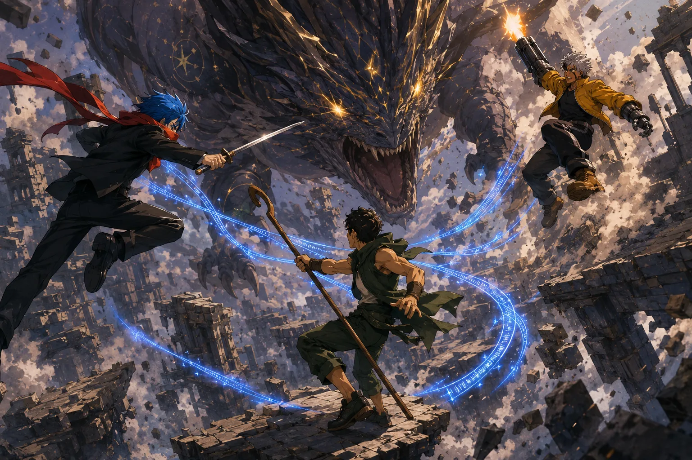
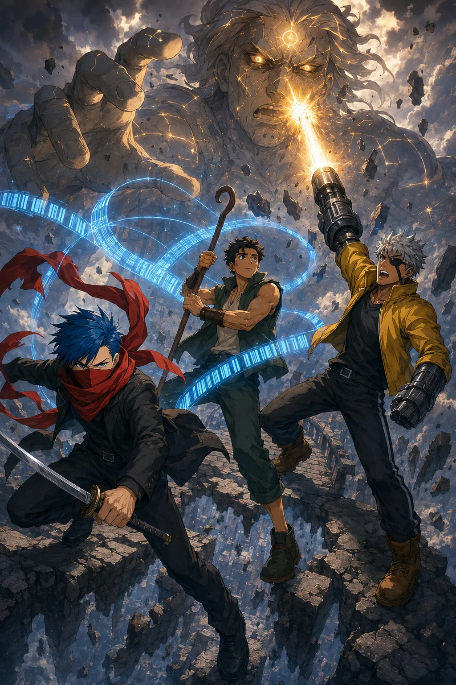
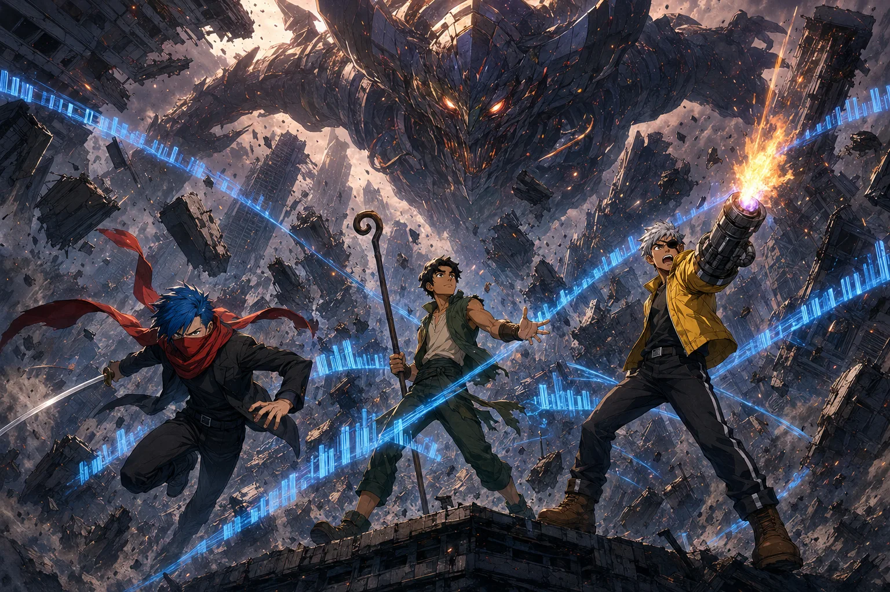
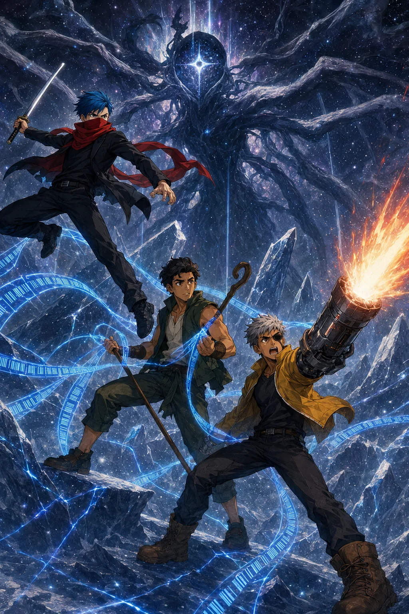
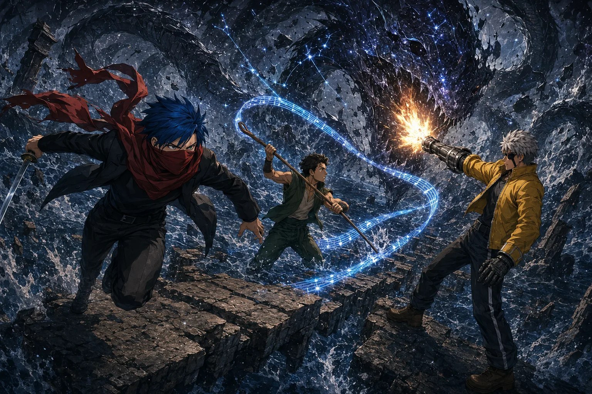
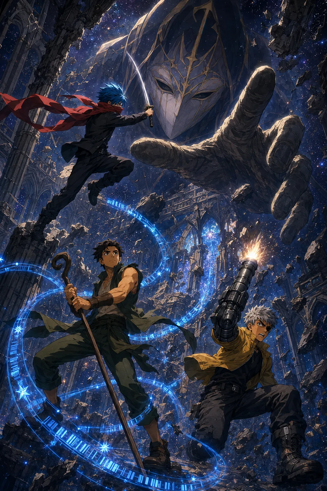